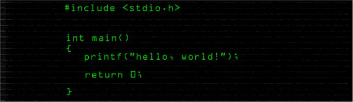
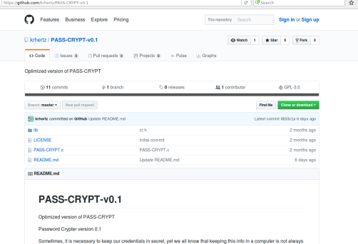

PASS-CRYPT-v0.1 - Crypter de texto plano programado en C
¿A quién no le gusta mantener sus credenciales seguras? Hace unos meses y siéndo algo paranóico, me di a la tarea de crear un Cryper de texto plano para poder mantener ya sea texto importante o datos.
18 April 2017

¿A quién no le gusta mantener sus credenciales seguras? Hace unos meses y siéndo algo paranóico, me di a la tarea de crear un Cryper de texto plano para poder mantener ya sea texto importante o datos, cifrados de una manera muy personalizable.
¿QUÉ ES PASS-CRYPT-v0.1?
Es una herramienta que permite hacer las veces de una especie de "hasher", para lo cual se sirve de una serie de algoritmos que, con ciertas entradas de texto por parte del usuario, permiten la creación de una llave que será utilizada para obfuscar el texto plano.
En mi Github pueden encontrar el proyecto:

https://github.com/krhertz/PASS-CRYPT-v0.1
Estructura del algoritmo
Me tomó algo de tiempo determinar un algoritmo que me permitiera tanto cifrar como Descifrar el texto y al final terminé con algo que me dejó satisfecho.
Para mantener la integridad de la información y de alguna manera evitar el "crackeo", el algoritmo se sirve de una serie de variables que pueden ser modificadas a fin de tener completo control durante el proceso de generación de la llave. Dichas variables son:
Custom key: Llave proveida por el usuario (completamente aleatoria en longitud y caracteres).
Module: Número necesario para la generación de la llave.
A: Veces a generar una rutina.
B: Longitud de la llave.
C: Longitude del 'modulus' utilizado en la opción 'Module'.
NOTA: Para más información sobre las variables, verificar el archivo: "lib/cr.h".
DESCARGA Y USO DE LA HERRAMIENTA:
Esta información la puede en contrar en el Github, pero les dejo la versión en Español:
OPTIONS
-c, --crypt Bandera para cifrar el archivo de entrada.
-d, --decrypt Bandera para descifrar el archivo de entrada.
-i, --in_file=FILE Archivo a cifrar o descifrar.
-o, --out_file=FILE Out-file: resultado (archivo de salida cifrado o descifrado).
'start' Siempre hay que escribir la palabra 'start' al final del comando.
-?, --help Ayuda.
--usage Mostrar un pequeño mensaje de modo de uso.
-V, --version imprimir la versión del programa
Usage: PASS-CRYPT [-cd?V] [-i FILE] [-o FILE] [--crypt] [--decrypt]
[--in_file=FILE] [--out_file=FILE] [--'start'] [--help] [--usage]
[--version] start
Para tener la herramienta, solo es necesario hacer un "git-clone" del repositorio. En una terminal:
git clone https://github.com/krhertz/PASS-CRYPT-v0.1.git
Luego, acceder a la carpeta de la herramienta y compilar el código:
sudo make PASS-CRYPT
Iniciamos la herramienta
Para cifrar:
sudo ./PASS-CRYPT -c -i archivo_a_cifrar -o archivo_cifrado start
Para Descifrar:
sudo ./PASS-CRYPT -d -i archivo_a_cifrar -o archivo_descifrado start
Una vez la herramienta es iniciada, esta pedirá un valor de llave. Este es una cadena de caracteres que el usuario ingresa. Es importante poner atención al texto: espacios, puntos, comas, ¡todo! Si no ponemos atención a ello, al generar la llave, hasta un simple punto puede hacer que se genere una llave completamente diferente y, por ende, la información original no mostrada.
No es lo mismo:
key: password
modul: 4
que:
key: PassworD
modul: 4
Mantengan sus credenciales en un lugar seguro. Si estudian el código, pueden tener el control de todo el proceso de generación de la llave. Hagan uso de caracteres ASCII solamente. Puedes cifrar textos enteros. En el archivo "cr.h", se encuentra todo el algoritmo las variables 'A', 'B' y 'C' son modificables. Solo recuerden que cualquier cambio a las variables, necesitará que el código sea recompilado para aceptar los cambios.
Exploiting vulnerabilities, creating new ways through Happy Hacking!